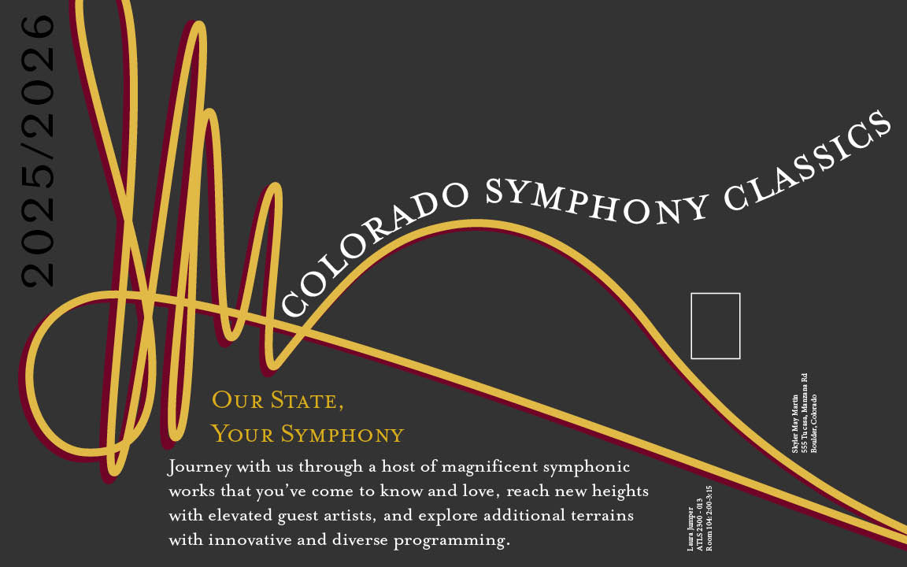
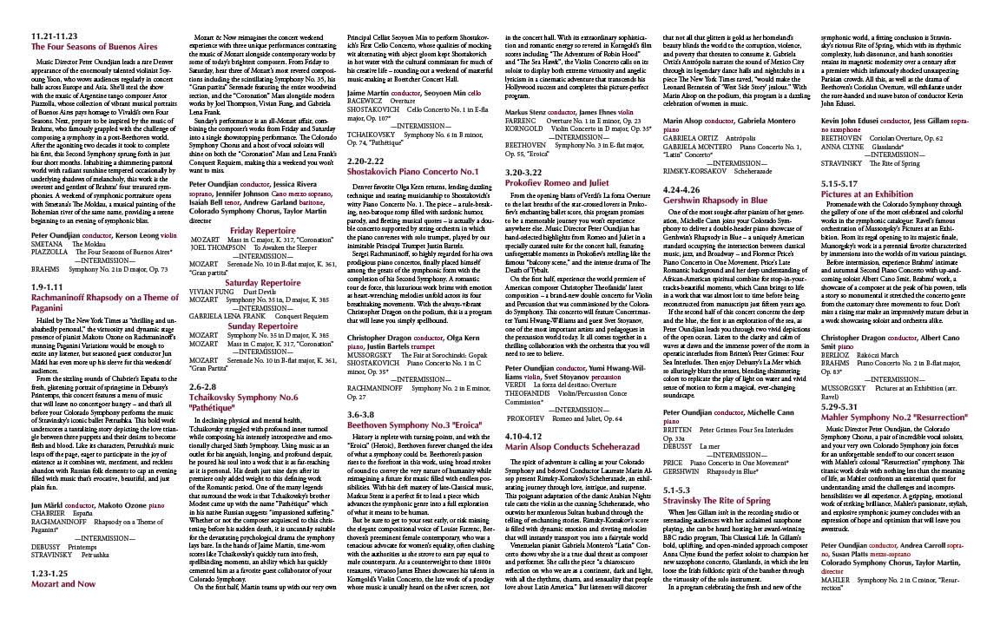
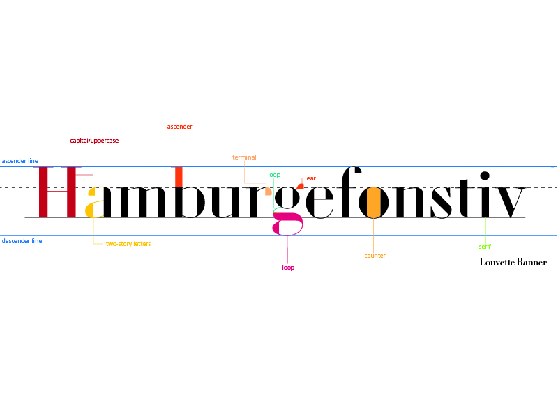
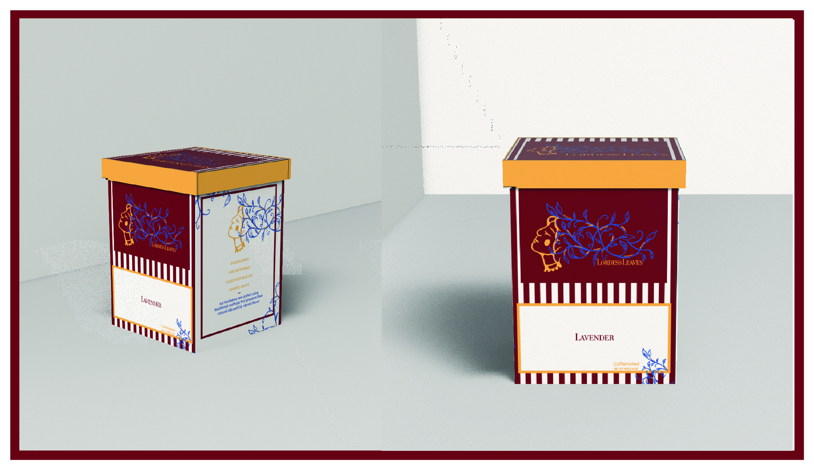
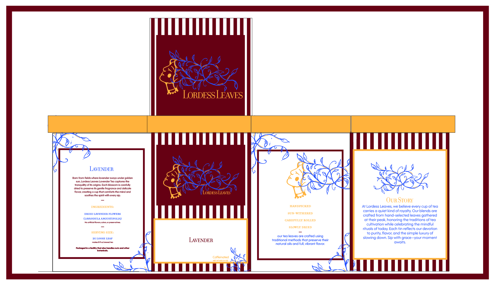

Colorado Symphony Classics
Demonstrates advanced proficiency in Adobe Illustrator and Adobe InDesign through thoughtful layout, typography, and visual hierarchy.
The front of the poster establishes an elegant design approach, that the viewers are able to understand and get the sense of sophistication.
The back layout accommodates all required information while maintaining the elegant visual. Strategic use of typographic hierarchy, spacing, and alignment is demonstrated.
A primary challenge of this project was developing a visual identity independent of the existing real-world company. This required creating a design aesthetic from the ground up, as well as designing an effective layout capable of organizing a large amount of information in a clear manner.


Anatomy of Typography
This project demonstrates advanced expertise in typography, including a strong understanding of font anatomy.
Created entirely in Adobe Illustrator, the work showcases precision in technical execution, attention to detail, and intentional designing decisions that enhance readability and the visual impact.

Poster Replicate
This project demonstrates the ability to accurately recreate an existing design through original and intentional methods. It reflects a high level of attention to detail and a strong commitment to preserving the integrity of the original piece.
Created entirely in Adobe Illustrator, every element was designed by hand to delicately reconstruct a printed poster. The work highlights a strong understanding of typography, color theory, scale, spacing, and overall visual hierarchy.
Lordess Leaves
This project showcases a multidisciplinary design skill set by taking an original concept from the original idea to full brand realization. The work demonstrates the ability to develop a cohesive visual identity—including the look, feel, logo, and brand mission—while ensuring all elements flow as a unified visual rather than separate components.
The project includes the development of a tea tin product, including logo design, branding, packaging, and product identity. The logo was hand-designed in Procreate, showing dedication to originality. The product was 3D rendered in Adobe Substance 3D Stager to create a realistic mock up, and Adobe Illustrator was used to create layouts and present the product in a polished, professional format.
This project showcases many different expertise. It demonstrates the ability to come up with an original idea and bring it to life by designing a look, logo, feel, and brand with a mission. There is attention to creating a cohesive brand and product that feels like one making it more pleasing to the consumers.

